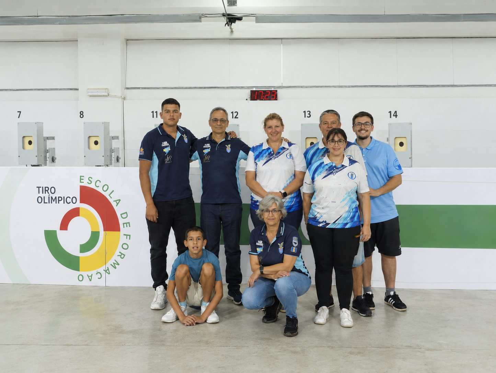

Sports Club da Madeira em visita à EFTO
Os atletas madeirenses assistiram à 7.ª prova do Troféu BIG, conheceram a escola e experimentaram o nosso equipamento.
Ler artigo →
Respiração e disparo: 5 dicas para quem está a começar
[Texto provisório] Como a respiração influencia a pontaria e que hábitos simples ajudam a manter a calma no posto de tiro.
Ler mais →
Resultados da [N.ª] jornada do Troféu BIG
[Texto provisório] Classificações, recordes pessoais e os destaques dos atletas da EFTO na última prova.
Ler mais →
À conversa com [nome do atleta]
[Texto provisório] Como começou no tiro, o que mais gosta na modalidade e os objetivos para esta temporada.
Ler mais →